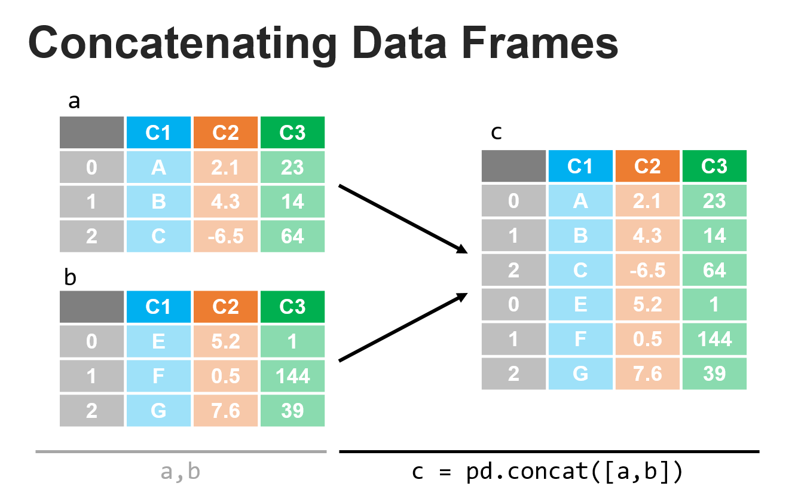
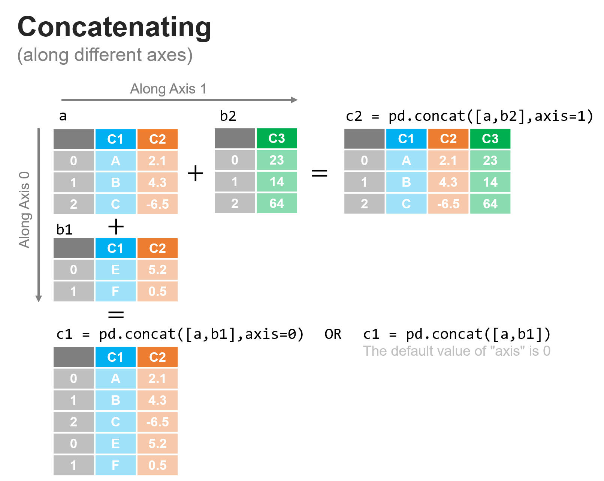
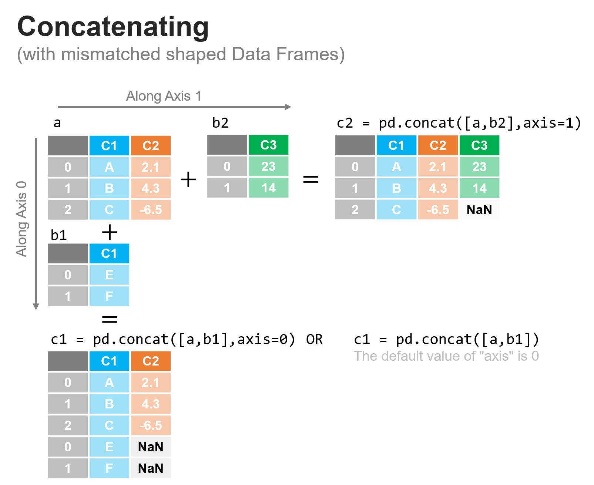

Combining datasets: concatenating#
This lesson is all about bring datasets together and there are two main approaches: concatenate and merge. In this lesson, we will start with concatenate and discuss merge in a later lesson. What is concatenation? Suppose…
You have a dataset you’ve collected, and then your team brings in data on some new customers
You’re a doctor’s office with a list of patients and you bring on a new patient
You’re collecting plant measurements for a scientific study and you encounter new examples of the species that you also measure In each of these cases, how do we add in the new data? One common way of thinking of concatentation is appending a new observation or multiple new observations to our data. Consider a doctor’s office that has records of patient names, birth dates, height, and blood pressure in a DataFrame. If the practice received a new patient, that new patient’s record would be appended to (a.k.a. concatenated with) the remaining records to create a combined dataset. Concatenation typically is done to combine two DataFrames by appending the rows of DataFrame to the other, as shown in the figure below.

While you can also use concatenate to add columns (e.g. adding in “weight” as a variable in the doctor’s office example), this process is far less common and is typically done via a merge rather than a concatenation (we’ll discuss merge in the next lesson). To help us with our discussion of concatenation, let’s create two DataFrames that we want to combine:
import pandas as pd
df1 = pd.DataFrame({'animals': ['dog', 'cat', 'bird', 'fish'],
'location': ['land', 'land', 'air', 'water'],
'has_fur': [True, True, False, False],
'avg_weight':[40,10,0.1,4]})
df1
| animals | location | has_fur | avg_weight | |
|---|---|---|---|---|
| 0 | dog | land | True | 40.0 |
| 1 | cat | land | True | 10.0 |
| 2 | bird | air | False | 0.1 |
| 3 | fish | water | False | 4.0 |
df2 = pd.DataFrame({'animals': ['giraffe', 'elephant', 'blue whale'],
'location': ['land','land','water'],
'has_fur': [True, False, False],
'avg_weight':[3000,12000,300000]})
df2
| animals | location | has_fur | avg_weight | |
|---|---|---|---|---|
| 0 | giraffe | land | True | 3000 |
| 1 | elephant | land | False | 12000 |
| 2 | blue whale | water | False | 300000 |
Concatenating DataFrames allows us to add rows or columns from one DataFrame to another. If we look at df1 and df2 above, we can see that we have the same information for both datasets: animal type, the location where the animal is commonly found, whether or not it has fur, and the average weight in pounds. In this case, we may simple want to combine these into one DataFrame which we can easily do with the concatenate method.
Let’s try this approach on our example dataframes:
df_concat = pd.concat([df1,df2])
df_concat
| animals | location | has_fur | avg_weight | |
|---|---|---|---|---|
| 0 | dog | land | True | 40.0 |
| 1 | cat | land | True | 10.0 |
| 2 | bird | air | False | 0.1 |
| 3 | fish | water | False | 4.0 |
| 0 | giraffe | land | True | 3000.0 |
| 1 | elephant | land | False | 12000.0 |
| 2 | blue whale | water | False | 300000.0 |
Note that the index labels were retained from the original datasets, so we see the labels as: [0, 1, 2, 3, 0, 1, 2]. Sometimes if these were id’s associated with each row entry, we may want to keep them as is, but if instead we wanted them as row numbers, we could apply the reset_index method to create a fresh index that increments via the row count.
df_concat_reindexed = df_concat.reset_index()
df_concat_reindexed
| index | animals | location | has_fur | avg_weight | |
|---|---|---|---|---|---|
| 0 | 0 | dog | land | True | 40.0 |
| 1 | 1 | cat | land | True | 10.0 |
| 2 | 2 | bird | air | False | 0.1 |
| 3 | 3 | fish | water | False | 4.0 |
| 4 | 0 | giraffe | land | True | 3000.0 |
| 5 | 1 | elephant | land | False | 12000.0 |
| 6 | 2 | blue whale | water | False | 300000.0 |
If we wanted to drop the old index, we could add the drop=True key/value pair to the call as shown below.
df_concat_reindexed = df_concat.reset_index(drop=True)
df_concat_reindexed
| animals | location | has_fur | avg_weight | |
|---|---|---|---|---|
| 0 | dog | land | True | 40.0 |
| 1 | cat | land | True | 10.0 |
| 2 | bird | air | False | 0.1 |
| 3 | fish | water | False | 4.0 |
| 4 | giraffe | land | True | 3000.0 |
| 5 | elephant | land | False | 12000.0 |
| 6 | blue whale | water | False | 300000.0 |
There are generally many additional parameters for pandas methods that may be useful for your specific application. Looking at the documentation is always recommended (and something we do quite frequently since it’s nearly impossible to memorize all the features of these tools).
Concatenating along different axes#
The example we showed above applied concatenate along the default axis (0):
df_concat = pd.concat([df1,df2],axis=0)
df_concat
| animals | location | has_fur | avg_weight | |
|---|---|---|---|---|
| 0 | dog | land | True | 40.0 |
| 1 | cat | land | True | 10.0 |
| 2 | bird | air | False | 0.1 |
| 3 | fish | water | False | 4.0 |
| 0 | giraffe | land | True | 3000.0 |
| 1 | elephant | land | False | 12000.0 |
| 2 | blue whale | water | False | 300000.0 |
This mean that rows were concatenated to rows. But we could also concatenate columns as shown in the figure below:

Let’s say we wanted to add information about each animal about its average lifespan in years and its length (along the longest dimension) in meters as shown in the DataFrame below:
df3 = pd.DataFrame({'life':[12,13,4,3],
'height':[0.6,0.45,0.2,0.05]})
df3
| life | height | |
|---|---|---|
| 0 | 12 | 0.60 |
| 1 | 13 | 0.45 |
| 2 | 4 | 0.20 |
| 3 | 3 | 0.05 |
And recall df1:
df1
| animals | location | has_fur | avg_weight | |
|---|---|---|---|---|
| 0 | dog | land | True | 40.0 |
| 1 | cat | land | True | 10.0 |
| 2 | bird | air | False | 0.1 |
| 3 | fish | water | False | 4.0 |
What we can notice here is that the data in df3 are nicely lined up and just need to be added as additional columns to df1 as shown in the figure below (along axis 1). Let’s do it:
df_concat_axis1 = pd.concat([df1,df3],axis=1)
df_concat_axis1
| animals | location | has_fur | avg_weight | life | height | |
|---|---|---|---|---|---|---|
| 0 | dog | land | True | 40.0 | 12 | 0.60 |
| 1 | cat | land | True | 10.0 | 13 | 0.45 |
| 2 | bird | air | False | 0.1 | 4 | 0.20 |
| 3 | fish | water | False | 4.0 | 3 | 0.05 |
Concatenating with mismatched datasets#
In all of the cases we’ve talked about so far, everything has been very nice and clean - when we concatenated rows, there were the same number of columns and we concatenated columns there were the same number of rows: an ideal situation. We have to be careful when concatenating, because we’ll still get a result if these assumptions are not true, with any blanks filled in with NaN values, as shown in the figure below:

In the figure above, we can see that concat matches data across axis 0 (rows) by the column headers, and across axis 1 (columns) by the row index. Where there is not a correspondence, a NaN value is inserted.
Let’s see this in action in the code - we’ll start by creating the DataFrames:
a = pd.DataFrame(data={'C1':["A","B","C"],
'C2':[2.1,4.3,-6.5]})
a
| C1 | C2 | |
|---|---|---|
| 0 | A | 2.1 |
| 1 | B | 4.3 |
| 2 | C | -6.5 |
b2 = pd.DataFrame(data={'C3':[23,14]})
b2
| C3 | |
|---|---|
| 0 | 23 |
| 1 | 14 |
Now let’s concatenate them together as shown above:
c1 = pd.concat([a,b1],axis=0)
c1
---------------------------------------------------------------------------
NameError Traceback (most recent call last)
<ipython-input-12-8c69784fe02b> in <module>
----> 1 c1 = pd.concat([a,b1],axis=0)
2 c1
NameError: name 'b1' is not defined
c2 = pd.concat([a,b2],axis=1)
c2
| C1 | C2 | C3 | |
|---|---|---|---|
| 0 | A | 2.1 | 23.0 |
| 1 | B | 4.3 | 14.0 |
| 2 | C | -6.5 | NaN |
In each case, when concatenating along the rows, concatenate placed the data in the row or column by matching the row index or column header. We do need to take care when applying this since improper use may still combine your DataFrames but in ways you may not want or expect.
df1
| animals | location | has_fur | avg_weight | |
|---|---|---|---|---|
| 0 | dog | land | True | 40.0 |
| 1 | cat | land | True | 10.0 |
| 2 | bird | air | False | 0.1 |
| 3 | fish | water | False | 4.0 |
df4 = pd.DataFrame({'student_id':[623,29,294],
'grade':["A-","B+","B"]})
df4
| student_id | grade | |
|---|---|---|
| 0 | 623 | A- |
| 1 | 29 | B+ |
| 2 | 294 | B |
df1 and df4 clearly have no relationship to one another and are not the same dimension along either axis, but if we concate them together, they will certainly combine:
df_ax0 = pd.concat([df1,df4],axis=0)
df_ax0
| animals | location | has_fur | avg_weight | student_id | grade | |
|---|---|---|---|---|---|---|
| 0 | dog | land | True | 40.0 | NaN | NaN |
| 1 | cat | land | True | 10.0 | NaN | NaN |
| 2 | bird | air | False | 0.1 | NaN | NaN |
| 3 | fish | water | False | 4.0 | NaN | NaN |
| 0 | NaN | NaN | NaN | NaN | 623.0 | A- |
| 1 | NaN | NaN | NaN | NaN | 29.0 | B+ |
| 2 | NaN | NaN | NaN | NaN | 294.0 | B |
In this first case, since there are no shared column headers, this essentially creates two separate tables within one. In practice, you rarely would want something like this.
If we combine along axis 1, the story is equally problematic, since concat does combine the data, but nonsensically so since the animals are not the students, they just shared the same index values, so the columns were added where those indices matched:
df_ax1 = pd.concat([df1,df4],axis=1)
df_ax1
| animals | location | has_fur | avg_weight | student_id | grade | |
|---|---|---|---|---|---|---|
| 0 | dog | land | True | 40.0 | 623.0 | A- |
| 1 | cat | land | True | 10.0 | 29.0 | B+ |
| 2 | bird | air | False | 0.1 | 294.0 | B |
| 3 | fish | water | False | 4.0 | NaN | NaN |
We must take care in how we apply these techniques and always check the resulting data to make sure that the process accomplished what we were hoping for.
WARNING: Note that the columns were concatenated based on the index values, which happened to match the order of the rows as well (as they have for all the examples here). This is not always true, so care must be taken in such cases to make sure the combining of datasets occurs as expected. See the reading on index alignment for more discussion of this point.
Summary#
Combining data with concat is perfect when appending either just rows or just columns to a dataset. This works well in the case when you’re adding rows where your columns match (e.g. adding new patient medical readings to a DataFrame of patient medical readings) or when you’re adding columns to a DataFrame where your indices match (e.g. if you wanted to add a new set of medical readings for all your patients). Very often we’re faced with the more challenging case when you have two datasets and both the rows and columns differ. We’ll explore how to handle those cases through merge in the next lesson.